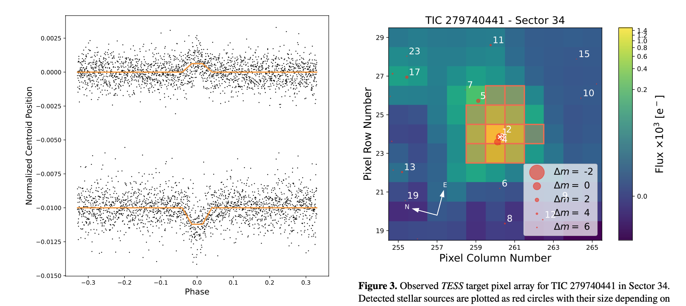
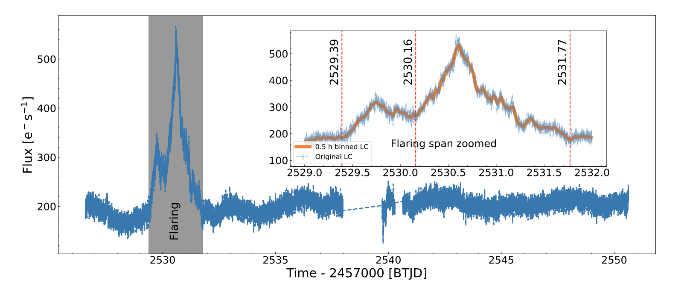
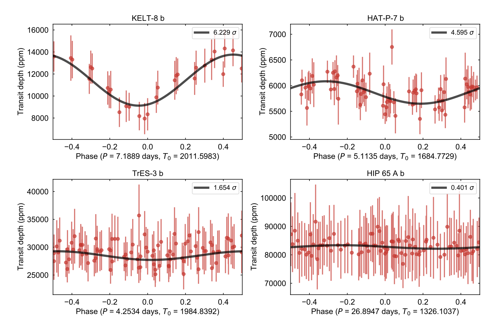

Welcome TESS followers to our latest news bulletin!
This week, we are looking at three recent papers from the archive. Enjoy!
Rapid Optical Flares in the Blazar OJ 287 on Intraday Timescales with TESS (Kishore et al. 2023) :
Radio loud Aactive Ggalactic Nnuclei (AGN) exhibit multiwavelength variability spanning a wide range of timescales. Observations of optical variability on short timescales provide important clues towards better understanding the processes operating in the innermost regions of the blazar. Kishore et al. (2023) present analysis of TESS photometry of the blazar OJ 28, an AGN at a redshift of z = 0.306 producing outbursts on timescales of ~12 years, and a likely host to a binary supermassive black hole. TESS observed the target in Sectors 44, 45, and 46 at 2-min cadence, detecting prominent variability in all three sectors, including flares. The authors split the data into six segments (two for each Ssector), evaluated the excess flux variance, and performed Lomb-Scargle periodogram and Continuous Auto-Regressive Moving Average analysis. Kishore et al. (2023) show that the two flares detected in Sector 45 correspond to a brightness increase of ∼81% and ∼194%, respectively, with likely doubling rise times of about 0.4 days. The authors argue that the flares represent a prominent outburst event not present in the rest of the data, and note that the rise of the flares is rapid and monotonic while the decay is slower and exhibits discontinuities, which they interpret as an indication that the cooling time is longer than the light-crossing time. Kishore et al. (2023) measured power spectral density slopes between -1.5 and -2.5, noted that the rise of the first flare exhibits the shortest variability timescale occurred (t = 0.38 days), and estimated that the size of the emitting region is between 2.2 and 6.3 x 10^15 cm. Thanks to observations from TESS, the authors were able to constrain the origin of the optical emission of the blazar OJ 287 to a compact region in the relativistic jet.
A Blind Search for Transit Depth Variability with TESS (Wang & Espinoza 2023) :
Apparent changes in the measured depth of consecutive transits could be used to shed light on the atmospheric properties and/or oblateness of the planet, the variability of the host star, the orbital dynamics of the systems, as well as the instrumental and/or data-processing systematics associated with the data itself. Wang & Espinoza (2023) present results from a blind search for transit depth variations in 330 known planets spanning a wide range of physical and orbital parameters. The targets were observed by TESS in Sectors 1 through 57 at 2-min cadence, produced more than five transits with a SNR greater than 5, and did not exhibit transit-timing variations larger than 0.1 days. The authors focused on modeling the data at the individual transit level, scrutinized the transit depths for indications of periodicity, and searched for correlations between the measured transit depth variations and the corresponding stellar activity. To account for potential Ssector-by-Ssector transit depth variability induced by contamination from a nearby sourcer, Wang & Espinoza (2023) fit all transits in a particular Ssector, with corresponding out-of-transit Gaussian Process posteriors as priors, and identify targets with 3-sigma transit depth discrepancy between Ssectors. The authors show that the majority of the studied targets do not exhibit transit depth variations above the expected noise levels. Wang & Espinoza (2023) demonstrated that four of the targets – KELT-8b, HAT-P-7b, TrES-3b, and HIP 65Ab – show strong indications for transit depth variability. Of these, the authors attribute the variability of KELT-8b to contamination from a nearby stellar variable, and note that the measured transit depth variations for TrES-3b and HIP 65Ab are likely an artifact of the relative high impact parameters (>0.8). Thanks to TESS, Wang & Espinoza (2023) highlight the remaining target, HAT-P-7b, as worthy of further investigations due to the potential indications of real transit depth variations originating from either the planet itself, or the host star.
The positional probability and true host star identification of TESS exoplanet candidates (Hadjigeorghiou & Armstrong 2023) :
Background and/or foreground contamination from nearby sources is a common problem for photometric surveys, and identifying the origin of detected transit- or eclipse-like events is a vital part of the discovery process. Typically, the contamination is due to nearby eclipsing binaries or variable stars that contribute sufficient amount of flux to the target’s aperture to significantly affect the extracted lightcurve. Hadjigeorghiou & Armstrong (2023) present a new method for identifying the true source of transiting events detected in TESS data utilizing Gaia data. The method calculates the flux contribution from all resolved sources within a radius of 168 arcsec from the target star (down to a magnitude difference of deltaT = 10 mag), determines the respective flux-weighted center-of-light positions of the detected events for the corresponding model aperture, and provides a per-Ssector probabilistic estimate as to the likelihood of these events originating from the resolved sources, including the respective uncertainties. The authors applied the method to 3226 TESS Objects of Interest (TOIs) and correctly identified 96.5 % of the host stars for 655 known exoplanets. The method indicated that a nearby source is the likely origin of the detected events for 96.5 % of the targets associated with 142 confirmed nearby eclipsing binaries and nearby planet candidates, and suggested that 293 out of 2365 active planet candidates are likely off-target false positives (~12%). The positional probabilities for about 3.4% of the tested cases were not consistent with the author’s expectations which they attribute to low SNR events, targets in crowded fields, model uncertainties or host stars in resolved visual binaries. Hadjigeorghiou & Armstrong (2023) note that the method has a relatively fast runtime (about a minute per target), requires minimal resources, and can be easily parallelized. The authors argue that this can facilitate the rapid vetting and validation process of detected TOIs, which would further improve the scientific impact of the TESS mission.

Fig. 1: Taken from Hadjigeorghiou & Armstrong (2023). Left panel:Phase-folded horizontal (upper) and vertical (lower) photo-center position for TIC 279740441 from Sector 34, along with the best-fit trapezium model. Right panel: Corresponding target pixel array highlighting all resolved nearby sources down to a TESS magnitude difference of 6.

Fig. 2: Taken from Kishore et al. (2023). TESS photometry of the radio-loud blazar OJ 287 from Sector 45, exhibiting a prominent double-flare event..

Fig. 3: Taken from Wang & Espinoza (2023). Phase-folded transit depths measured in TESS photometry for KELT-8b, HAT-P-7b, TrES-3b, and HIP 65 Ab, along with the best-fit sinusoidal models.